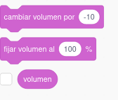

2.2.3. Sonido
Podemos usar las siguientes instrucciones relativas al sonido:
La primera de las piezas permite que suene un determinado sonido hasta que termine. De forma predeterminada, el sonido es el maullido de un gato. Si pulsamos sobre la lista desplegable, podremos grabar un sonido desde el navegador. La segunda instrucción permite iniciar un sonido. Al igual que con la pieza anterior, también es posible grabar un nuevo sonido. Finalmente, la última instrucción detiene todos los sonidos
Respecto a los efectos de los sonidos, tenemos las siguientes opciones:
Las dos primeras instrucciones permiten asignar efectos a los sonidos. En Scratch podemos seleccionar dos tipos de efectos si pulsamos la lista desplegable:
- Altura (tono): al seleccionarlo, cambiará el tono del sonido reproducido. Si es negativo, este bloque bajará el tono de los sonidos reproducidos. Por el contrario, si es positivo aumentará el tono.
- Balance izquierda / derecha: Este cambio se escucha mejor si usamos auriculares. Cuando se selecciona balance izquierda / derecha, cambiará el lado desde el que se está reproduciendo el sonido. Si es negativo, reproducirá más el sonido en el oído izquierdo, si es positivo, reproducirá más el sonido en el oído derecho.
La instrucción sumar al efecto cambia el efecto de sonido elegido por la cantidad especificada. Esto cambiará para todos los sonidos reproducidos en el objeto. Si se elige la opción dar al efecto seestablecerá el efecto de sonido especificado para todos los sonidos que se ejecutan en ese objeto en la cantidad especificada.
La pieza quitar efectos de sonido detendrá cualquier sonido que se esté reproduciendo en ese momento en todos los objetos y en el escenario .
Ten en cuenta que no puedes usar cualquier sonido ni imagen que encuentres por internet. Los materiales que utilices en un proyecto de Scratch deben ser libres de derechos
Tenemos las siguientes opciones para modificar el volumen en Scratch:

La primera instrucción permite cambiar el volumen del sonido del objeto o del escenario a un determinado valor. La segunda fija el volumen a un determinado porcentaje. Finalmente, volumen es una variable que almacena el volumen de un determinado objeto o escenario. Aprenderemos más sobre variables en la sección 2.2.8
Obra publicada con Licencia Creative Commons Reconocimiento Compartir igual 4.0